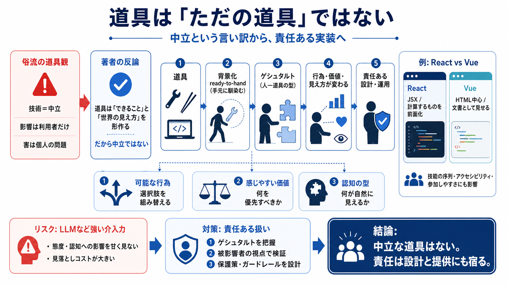

THESIS
02 / 14
責任は道具へ戻る
道具は中立ではない
「just a tool（ただの道具）」と言うことは、技術の影響を“個人の責任”に押し戻しやすくなる。 作者は、道具が世界の見え方と行為の範囲を形作る以上、責任ある設計・提供が必要だと主張する。
（要点）ハイデガーの
ready-to-hand
→ ゲシュタルト → 技術の影響 → 結論：責任
PROBLEM
03 / 14
言い訳の形
「中立」とは何か
技術はイデオロギー的に中立で、使う人の態度や価値観は推定できず、目的外の行動も生まない——という理解は便利な言い訳になり得る。 文章は、その「俗流の道具観」を誤りだと批判する。
俗流の前提（よくある）
技術＝価値観に無関係 / 影響は利用者のみ
著者の反論
道具は「できること」「見え方」を変える → 中立ではない
FOUNDATION
04 / 14
意識から背景化
ready-to-hand
ハイデガーは、道具が「できるようになること（能力の拡張）」を与え、うまく機能している間は意識の前景から消えると考える。 この「背景化」が、技術の影響を自覚しにくくする。
前景にあるとき
道具は“目に見える対象”として意識される
背景化するとき（ready-to-hand）
道具を意識せず、自然に使ってしまう
日本語
メモ：ready-to-hand＝「手元に馴染む状態」
CONCEPT
05 / 14
人—道具の型
ゲシュタルト（Gestalt）
背景化した道具は、単なる便利機械ではなく、人間—道具が一体化したゲシュタルトを作る。 そのゲシュタルトが「できること」「すべきだと感じやすいこと」「世界の見え方」を方向づける。
方向づけ①
できる行為の範囲
方向づけ②
感じやすい価値（すべき）
方向づけ③
世界の見え方（認知の型）
例：フォーク vs 箸で、前提と食べ方の“型”が変わり得る。
IMPLICATION
06 / 14
行為が別物になる
選択肢を作り替える
車・銃のような道具は、行為の選択肢を変え、対立の様式を「交渉」より「威嚇や衝突」へ寄せ得る。 つまり“道具＝中立”は、行為レベルの因果を見落とす。
道具の役割
行為の可能性（可能世界）を組み替える
結果
態度・対立・意思決定の傾向が変化する
（ポイント）「どんな行為が自然に見えるか」を左右する。
CASE
07 / 14
フレームは世界を教える
React vs Vue
ReactとVueは同じようにUIを作れるが、提示のされ方が異なるため、必要な技能や優先される考え方が変わる。 その差は開発の“常識”だけでなく、「参加すべき／排除されやすい」人まで形作り得る。
React（提示の型）
JSXで「計算するもの」を前面に置きやすい
Vue（提示の型）
HTML中心で「文書として見せるもの」を前面に置きやすい
EVIDENCE
08 / 14
技術選定の副作用
常識を固定する
フレームワークの違いは、設計・アクセシビリティ・CSSの扱いなど、技能の序列や開発優先度を変え得る。 その結果、チーム文化としてゲシュタルトが固定化し、参加可能性の格差につながる可能性がある。
変わる①
必要スキルの序列
変わる②
優先される価値（設計/配慮）
変わる③
参加しやすさ（排除されやすさ）
単なる性能比較ではなく「思考習慣」を見る、という視点。
SOCIAL
09 / 14
力関係と結びつく
developer supremacy
ツールが育てるゲシュタルトは、社会的なパワー構造と結びつきやすい。 そのため技術業界は、開発者優位（developer supremacy）的な価値観を再生産する方向に偏り得ると作者は批判する。
起きがちな偏り
“作る側”の都合が常識化する
起きること
関与できない人の視点が薄くなる
（含意）責任は「利用者の選び方」だけでは完結しない。
RISK
10 / 14
強い介入力
LLMの警告
LLMのような強い介入力を持つツールでは、無自覚な影響が深刻になりやすい。 作者は極端例としてAI psychosisのような現象に触れ、「影響を甘く見ない」ことを促す。
どこが難しい
態度・認知のズレが起き得る
教訓
見落としコストが大きい → 設計と運用が要る
（注意）本文は断定の強い箇所もあるため、読解は“警告”として安全に扱う。
TAKEAWAY
11 / 14
中立は成立しない
「just a tool」は責任回避
道具は中立ではあり得ず、「ただの道具」と言うことは責任回避に近づき得る。 さらに、被影響者に「あなたが間違っている」と押し付ける形になり得る点が問題だとする。
問題①
影響の所在が曖昧になる
問題②
害が個人の問題にされる
問題③
被影響者の視点が消える
PROCESS
12 / 14
責任ある扱いへ
次にやること
作者の方向性からは、ツールが形成するゲシュタルトを理解し、害を生みにくい設計・運用を選ぶことが求められる。 そのためには、被影響者の視点で検証し、影響が出たときの保護策を用意する必要がある。
i
ゲシュタルト（見え方/可能行為）を把握
ii
参加可能性・アクセシビリティ等を検証
iii
保護策と運用のガードレールを設計
（日本語）responsibility＝責任 / guardrails＝柵・制約（暴走の抑制）
CLOSING
13 / 14
結論：設計が倫理になる
道具＝社会の一部
技術の影響は“使う人”だけではなく、道具が作る世界の型（ゲシュタルト）に宿る。 だから業界は、害を避けるためにツールの設計・提供の責任をもっと引き受けるべきだ、と文章は締めくくる。
核心
中立な道具はない（影響は設計に内在）
要請
“ただの道具”をやめ、責任ある実装へ
REFERENCES
14 / 14
References
No references found